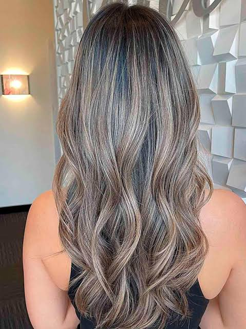
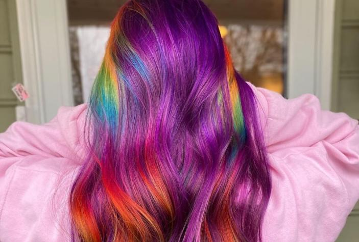
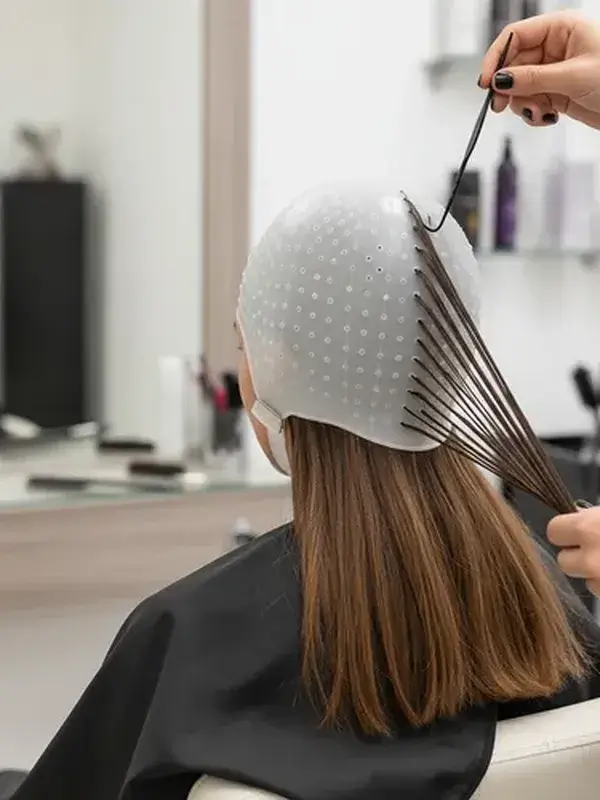
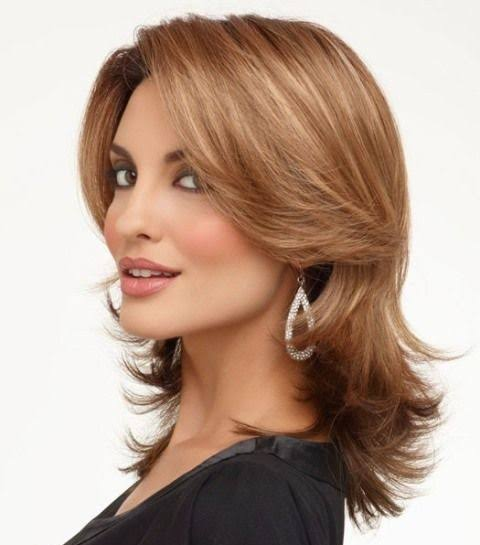
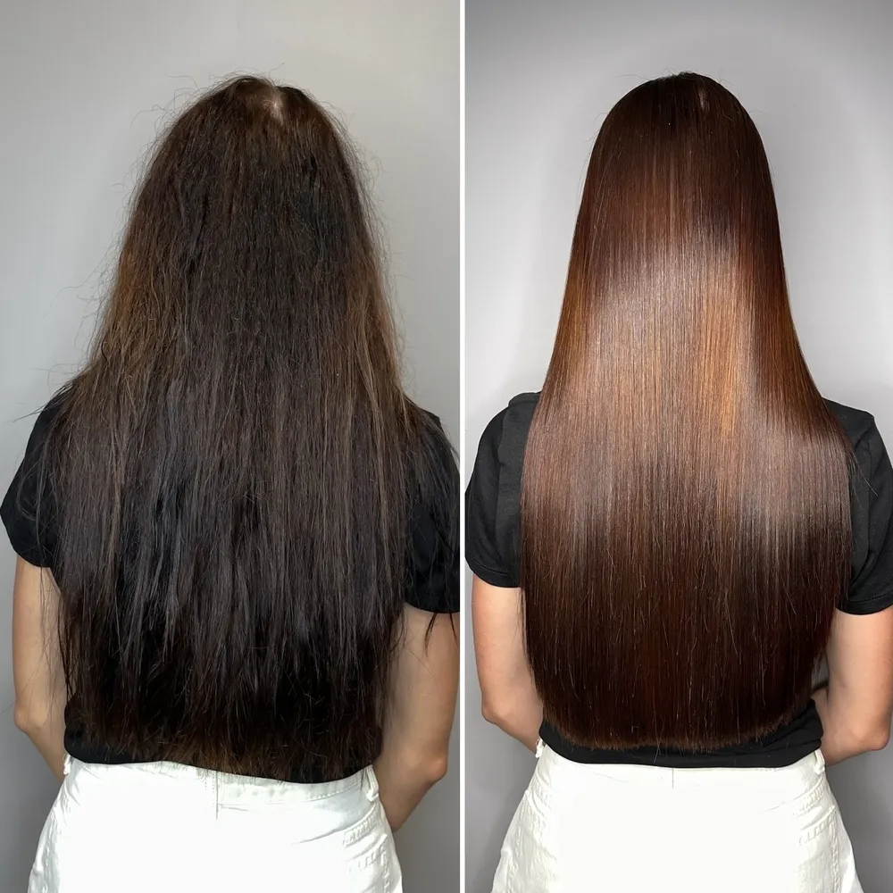
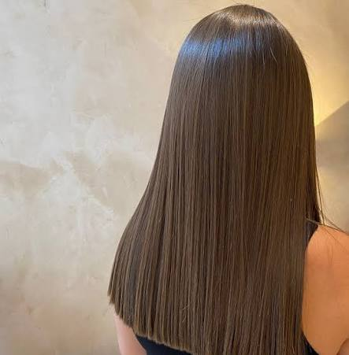
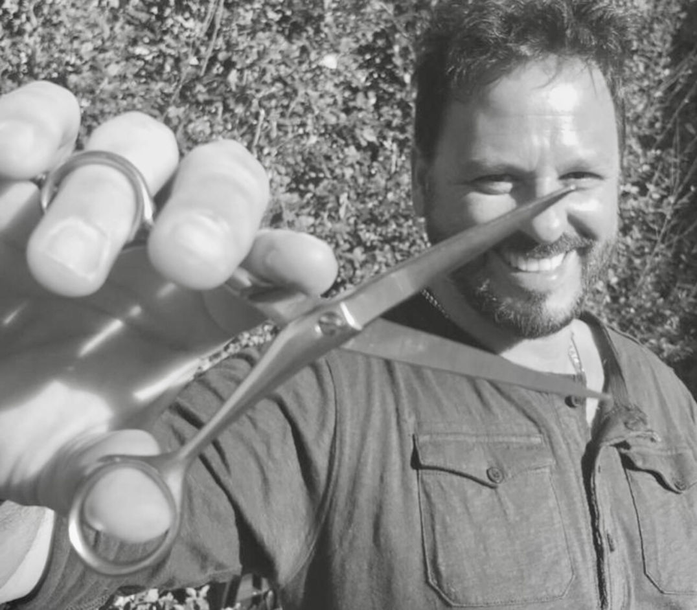

Desde 1994 · Caballito
Diego Suarez Hair Studio
Trabajo el color y la iluminación con diagnóstico previo: primero miro el cabello, después elijo la técnica. En Caballito, desde 1994.
Servicios
Qué hacemos, y con qué se trabaja
La mayoría de los servicios de color se definen después de una conversación sobre tu cabello, no antes. Acá está el catálogo completo y qué necesita seña.
Corte
-
Según diagnóstico
Corte dama
Corte a medida, con línea revisada sobre la forma natural.
-
Según diagnóstico
Corte caballero
Perfilado clásico y mantenimiento de la forma.
-
Según diagnóstico
Flequillo
Corte de flequillo, con o sin corte completo.
Color
-
Según diagnóstico
Color
Coloración completa con diagnóstico previo de tono y estado.
-
Según diagnóstico
Color hombre
Cobertura y matiz con acabado natural.
-
Con seña
Color y mechas simultáneas
Base y luz en la misma visita.
-
Según diagnóstico
Baño de luz y remontación
Para mantener el tono entre citas.
Iluminación
-
Con seña
Balayage y baby light
Pintura libre a mano, con arrastre suave desde la raíz.
-
Con seña
Reflejos con gorra
Aplicación en la parte alta, con montaje controlado.
-
Con seña
Reflejos con papel
Mechas seccionadas, para un resultado más dibujado.
Tratamientos
-
Según diagnóstico
Bótox capilar
Reconstrucción de la fibra y efecto sobre el peinado.
-
Según diagnóstico
Shock de queratina
Reconstrucción intensa para cabello castigado.
-
Según diagnóstico
Disciplinador
Control de frizz y alineación.
-
Sin turno
Hair spa
Ritual de hidratación profunda.
-
Sin turno
Lavado nutritivo
Se pide al llegar al local.
Alisados
-
Con seña
Alisado
Según el tipo de cabello, con o sin formol y/o derivados como la formalina. Te digo cuál corresponde antes de empezar.
Lo que no hacemos
No hacemos peinados de fiesta, recogido, semi-recogidos ni trenzas. El trabajo es color, corte y tratamiento del cabello.
El trabajo
El color se decide viendo
Un balayage no se explica, se ve. Acá van las fotos del salón.
-

Iluminación Balayage -

Color Color -

Iluminación Reflejos con gorra -

Corte Corte dama -

Tratamiento Bótox capilar -

Alisado Alisado -
Color y mechas
Base y luz en la misma visita. Falta la foto.
-
Reflejos con papel
Mechas seccionadas. Falta la foto.
-
Color hombre
Cobertura y matiz. Falta la foto.
Las seis fotos son del local. Faltan las de los tres trabajos marcados.

Mi compromiso
El diagnóstico va antes que el color
Atiendo una sola persona a la vez. No es una postura de marca: es la forma de trabajar que conozco. Si hay otra persona esperando, prefiero que espere un rato antes que correr.
Por eso, antes de decidir un color, reviso el estado del cabello. No parto de la foto que traés, sino de lo que veo en el momento. Si el cabello no está en condiciones para el trabajo que pedís, te lo digo, y primero hacemos el tratamiento. A veces eso significa que la cita se postpone. Es preferible a hacer un color que después hay que reparar.
Trabajo con producto de primer nivel —Wella, Tigi, L'Oréal y Schwarzkopf— porque el resultado depende mucho más de lo que parece de lo que se usa en la mecha.
Y lo que no hago, también lo digo: no hacemos peinados de fiesta, recogido, semi-recogidos ni trenzas. Si te fijaste en un peinado de una foto, este no es el lugar.
Productos
WellaTigiL'OréalSchwarzkopf
Horario y contacto
Cuando podés venir
Horario
| Lunes | Cerrado |
|---|---|
| Martes | 9:30 – 20:30 |
| Miércoles | 9:30 – 20:30 |
| Jueves | 9:30 – 20:30 |
| Viernes | 9:30 – 20:30 |
| Sábado | 9:30 – 20:30 |
| Domingo | Cerrado |
Hoy estamos cerrados. El primer día disponible es el martes.
Dirección
Av. Juan Bautista Alberdi 624, 1° A
Entre Riglos y Calazans, Caballito, CABA
Antes de reservar
Requieren seña: balayage y baby light, color con mechas
simultáneas, reflejos con gorra o papel, y alisados.
Sin turno: lavados nutritivos y hair spa, se piden al
llegar al local.
Cómo llegar
Escribinos
Si preferís no usar la plataforma, escribime directo y buscamos un horario juntos.
Gracias, ya está.
Te respondo por WhatsApp, normalmente el mismo día.